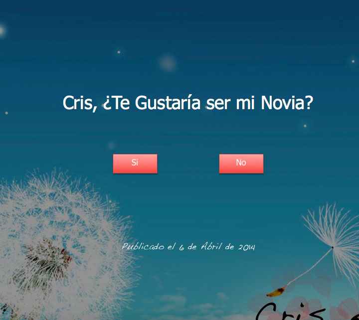

<div data-page="tabbar" class="page toolbar-fixed">
  <div class="navbar">
    <div class="navbar-inner">
      <div class="left"><a href="index.html" class="close-panel link icon-only"><i class="icon icon-back"></i></a></div>
      <div class="right">Historia</div>
      <div class="right"><a href="#" class="link open-panel icon-only"><i class="icon icon-bars"></i></a></div>
    </div>
  </div>

  <div class="page-content hide-bars-on-scroll">
   

<!-- 🍎 INTRO --> 
          <center>
          
          </center>

 <div class="tabs">
      <div id="tab-1" class="tab active"> 
        <div class="content-block">

          <H1>Han pasado cuatro años desde que te pedí que estuvieras conmigo y aunque parezca mucho tiempo, en realidad ha pasado volando, lo que significa cuan felices somos.</H1>

<p> Te amo mucho. Atte. <b>Iván HG</b> <i class="icon icon-heart"></i></p>


        </div>
      </div>
      


<!-- 🍎 --> 

    </div>

        </div>
      </div>
    </div>
  </div>
</div>